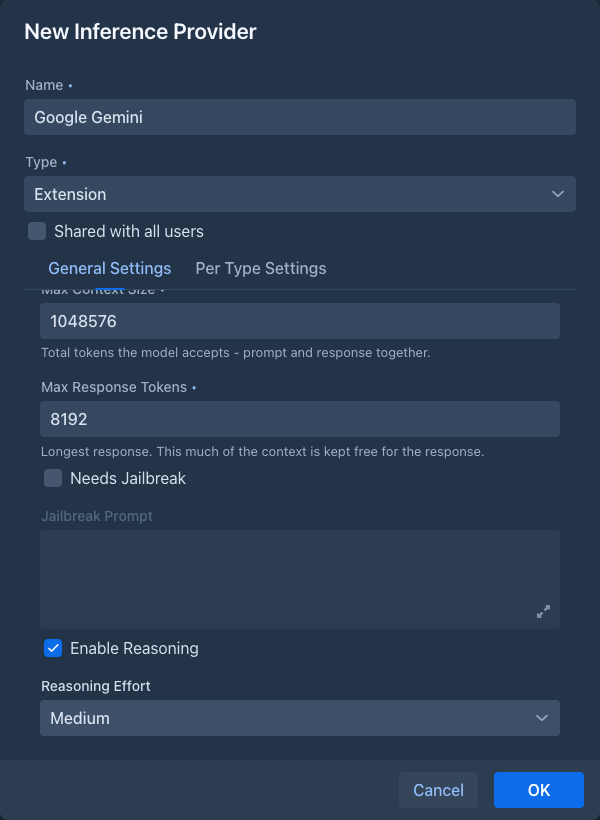
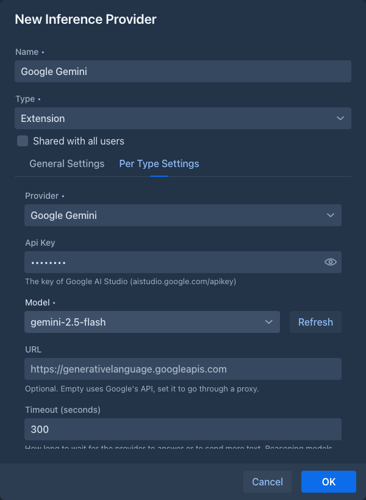
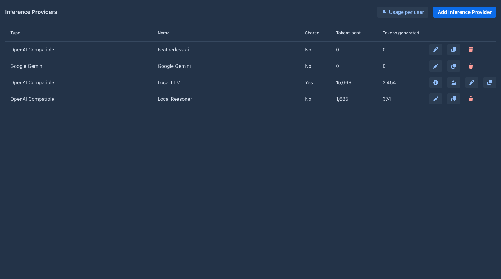

Google Gemini
Adds Google's Gemini models as an inference provider, over Google's own API instead of an OpenAI-compatible one.
Google also offers an OpenAI-compatible endpoint, which works with the normal OpenAI Compatible provider. This extension talks to the Gemini API directly (the Google Gen AI SDK), which gives the things the compatible endpoint doesn't: the summaries of the model's thinking shown as reasoning, the thinking level of Gemini 3 and the thinking budget of the earlier models, the safety filters, and the exact token counts Google reports.
Your story text goes to Google
Every request of an AI that uses this provider - the prompt with the story, the lorebook entries and the summaries, the
answers of the model, the files and pictures an agent or a command sends - is sent to Google's servers
(generativelanguage.googleapis.com, or the proxy you set). Google's terms and privacy policy for the Gemini API decide
what happens to it there (retention, whether it is used to improve models; this depends on the plan of your API key). The
other providers send to the server you chose, which may be your own. Do not use this provider for text you may not send to
Google. On a server shared with other users, an administrator who shares an AI of this provider sends the story text of
everybody who uses it to Google.
Installing
Load the extension in Admin → Extensions, as described in Managing extensions. The JAR is large (about 14 MB): it contains Google's SDK and the libraries only the SDK needs. Nothing else in Marginalia uses them.
Once it is loaded, the Type list of the inference provider dialog has a new entry, Extension, and the Provider list at the top of the Per Type Settings tab offers Google Gemini (it is chosen for you while it is the only one). Without a loaded extension that provides AIs, Extension is not offered.
Adding a Gemini provider
-
Get an API key in Google AI Studio.
-
On the Inference Providers tab click Add Inference Provider, enter a Name, choose the type Extension and the provider Google Gemini.
-
Fill in the General Settings (context size, response size,
reasoning ) and the settings of the provider on the Per Type Settings tab, then click Test Connection.


The provider is then on the list like any other, with the name of the provider in the Type column:

Test Connection lists the models and asks the chosen one for a few tokens, with the values in the dialog (before you save them).
Reasoning
The reasoning settings are those of the general settings of the provider, like for any provider:
- With Enabled Reasoning off the model thinks as it does by default and its thinking is not shown.
- With it on, the model sends the summaries of its thinking and they are shown as the reasoning of the story part. The Reasoning Effort sets how much it thinks: for Gemini 3 models it is the thinking level (low, medium, high), for the earlier models a budget of 1 024, 8 192 or 24 576 thinking tokens. None is the same as off.
Thinking tokens count as generated tokens, and they are taken from the response size you set: if the model uses it all for thinking, the story part comes back empty and the error says the response size was used up. Raise Max Response Tokens or lower the effort.
What works
Everything a story needs works as with an OpenAI-compatible provider: streaming, stopping a generation, summaries, extensions that call the model, functions the model can call (the Name generator offers some), and images and files attached to a message. The tokens a user uses are counted in the Tokens sent and Tokens generated columns from the numbers Google reports, and the limits of a shared provider apply.
The token counts shown in the story (the size of a part, the prompt) are counted by Google (the countTokens request of the
model), once for each text: the answers are remembered. When Google cannot be asked (no key, no network, an error), Marginalia
estimates the count itself for a minute and then tries Google again; a text that is saved or edited while another save is
going on is estimated too. The estimate differs a little from what Google bills.
When the extension is not loaded
The providers you created stay in the list when the extension is unloaded, with the type Extension: google-genai, and work again when the extension is loaded. While it is not loaded, a book that uses such a provider can't generate: the error tells you to load the extension or to choose another provider. The provider can still be opened and its general settings changed; the Gemini settings are only shown when the extension is loaded, and they are not touched.
Not supported
- Vertex AI (Google Cloud with a project and credentials). Only API keys of the Gemini API are supported.
- Image generation and the other output types of Gemini: only text is written.